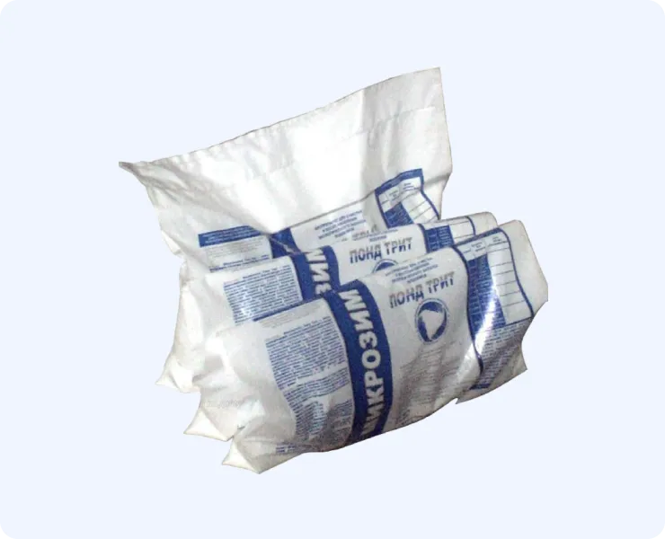

Биопрепараты
Микрозим “Понд Трит”, 1000г, для пруда до 200м² (на весь сезон)
Цена и наличие
- 1 шт.134,53 BYN / шт.В наличии
Данные на 23.11.2026.
Характеристики
- Размер емкости
- 1000 г
- Для прудов макс. объемом воды
- до 200м²
- Назначение
- очищение воды в пруду
Описание
Биопрепарат Микрозим “Понд Трит”, 1000гр, для пруда до 200м2 (на весь сезон) Видимое невооруженным глазом очищение воды в водоеме наступает в среднем через 1-1.5 месяца после начала обработки водоема биопрепаратом. 100% отмирание простейших водорослей наступает в течение 3 – 8 недель в закрытых и слабопроточных водоемах, ряски – 1.5-2.5 месяца в закрытых водоемах. Обработка водоема биопрепаратом с Мая по Сентябрь позволяет с эффективностью 80-95% очистить водоем от загрязнения. Благодаря очистке водоема от загрязнения восстанавливаются биологический баланс и интенсифицируются процессы микробиологического, биохимического, физического, и химического самоочищения. Водоем начинает функционировать как самоочищающаяся система. Достигнутое очисткой биологическое равновесие и самоочищение водоема может сохраняться сколь угодно долго при условии соблюдения санитарного режима водоема. Необходимо принять меры по восстановлению экосистемы водоохранной зоны и предотвращению или сокращению поступления в водоем загрязнителей. На водоемах которые отличались высоким начальным уровнем загрязнения, а также на водоемах где невозможно полностью исключить фактор загрязнения рекомендуется каждый теплый сезон обрабатывать водоем поддерживающими дозами биопрепарата (0,2 гр. на 1 м2 зеркала один раз в две недели), или в зависимости от интенсивности загрязнения ежегодно обрабатывать водоем полной дозой биопрепарата. Перед применением необходимо проконсультироваться со специалистом.
Применение и дозировка
Расход биопрепарата «ПОНД ТРИТ» на очистку водоема составляет от 4 до 5 граммов препарата на 1 м2 водного зеркала при средней глубине водоема 2-2.5 метра. Данная доза вносится в водоем в течение теплого сезона отдельными дозами с двухнедельными интервалами по следующему графику: Неделя 1: 2 грамма на 1 м2 водного зеркала Неделя 3: 1 грамм на 1 м2 водного зеркала Неделя 5: 0.5 грамма на 1 м2 водного зеркала Неделя 7: 0.5 грамма на 1 м2 водного зеркала Неделя 9: 0.2 грамма на 1 м2 водного зеркала Препарат вносится в водоем только строго в соответствии с графиком, т.к. произвольное сокращение двухнедельного интервала или завышение кратных доз биопрепарата может привести к кислородному голоданию рыб. Обработку водоема биопрепаратом рекомендуется начинать в Апреле-Мае, после прогрева воды до +10 ºС, но можно приступать к обработке водоема и в течение лета – микроорганизмы препарата будут очищать водоем до становления льда, перезимуют и возобновят активность следующей весной.